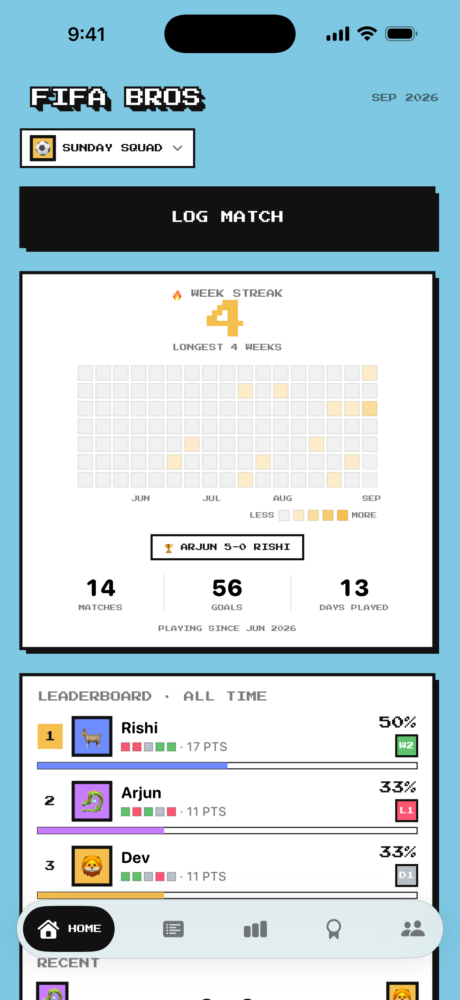
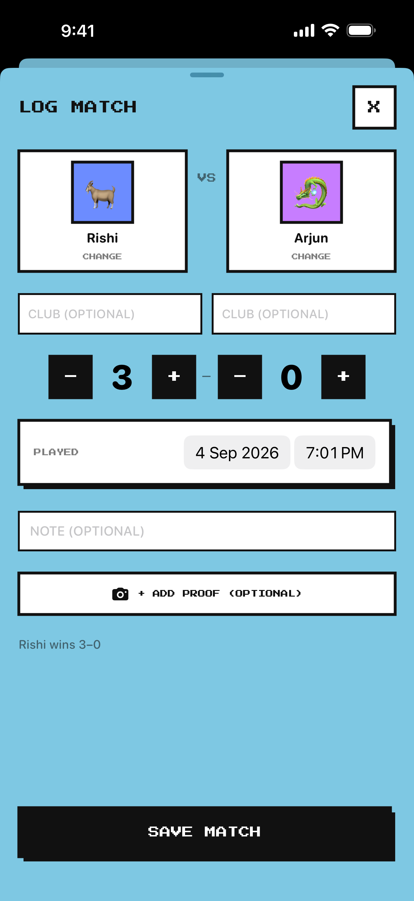
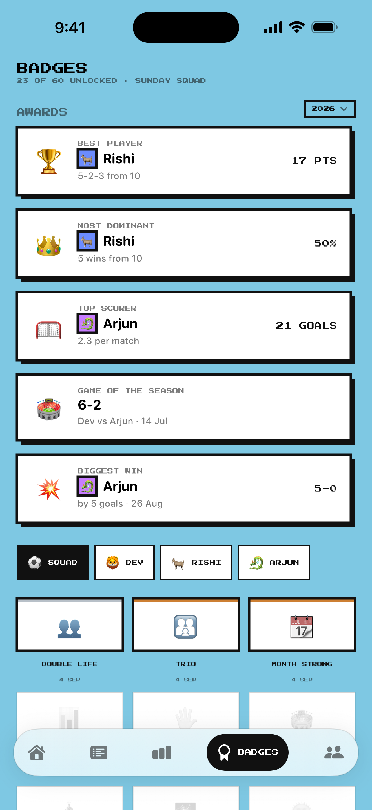

LOG EVERY MATCH
Choose the players, enter the score, add clubs and notes, and save the result in seconds.
THE SCOREBOARD FOR YOUR SQUAD
Track every match, crown every rivalry, and keep the receipts. Built for the friends who never stop arguing about who is actually best.

FULL-TIME FEATURES
Choose the players, enter the score, add clubs and notes, and save the result in seconds.
Leaderboards, form, records, head-to-head history, streaks and sixty unlockable badges.
Invite friends with a squad code so everyone sees and updates the same season.
Attach an optional scoreboard photo as proof. Only members of that squad can access it.
INSIDE THE APP
Built around the same bold blue pitch, hard shadows, and arcade typography you see in the app.


YOUR DATA. YOUR CALL.
Use Apple or Google to sign in. FIFA Bros does not offer email-and-password registration, run advertising, or include product analytics. Synced data and private proof photos are hosted with Supabase.
To delete your account inside the app, open Settings → Delete Account and confirm. This removes your authentication account and the synced database records belonging to it. Content controlled by another member may remain in a shared squad.
SUPPORT DESK
Tell us what happened and include your iPhone model and iOS version. Never send passwords or sign-in codes.
RAJ@RIVESA.AIFor privacy or account-deletion help, use the same email address.
Effective and last updated: 4 September 2026
This policy explains how FIFA Bros handles information when you use the iOS app. Questions or privacy requests can be sent to raj@rivesa.ai.
We use information to authenticate you, sync scorekeeping data, let members collaborate in shared squads, restore data on your devices, provide support, prevent abuse, and maintain the service.
Adding a proof photo is optional. The app accesses only the image you select, reduces its size, keeps a local copy, and uploads it to a private storage bucket so members of that squad can view it. Squad members can also see and edit shared players, matches, and proof photos. Proof photos are not public and are not used for advertising or tracking.
We use Supabase for authentication, database sync, server functions, and private file storage; Apple for Sign in with Apple; and Google for Sign in with Google. These providers process information under their own terms and privacy policies. We do not sell personal information, show targeted advertising, or use third-party advertising trackers.
Synced data is hosted in Supabase's India region. Authentication and row-level access rules are used to restrict data to signed-in users and members of the relevant squad. No storage or transmission method is completely secure.
We retain account and game data while your account is active or as reasonably needed to operate and secure the service or meet legal obligations. You can request deletion in the app at Settings → Delete Account. Deleting an account removes the account and associated data controlled by that account; information another member controls may remain with a shared squad. You may also email us for help.
You may decline proof photos, control photo-library permission in iOS Settings, export supported data, sign out, or delete your account.
FIFA Bros is not directed to children below the minimum age required to consent to online services in their country. Contact us if you believe a child provided information without appropriate permission.
Apple, Google, and their subprocessors may process information outside your country. We may update this policy as the app changes; the latest version will remain posted here with its updated date.
Effective and last updated: 4 September 2026
These terms govern your use of the FIFA Bros iOS app. By using the app, you agree to these terms and the Privacy Policy above. If you do not agree, do not use the app.
You may use FIFA Bros for personal scorekeeping and collaboration with people you invite. You are responsible for your account, device, and submitted content. Do not misuse the service, interfere with its operation, attempt unauthorised access, or violate another person's rights or applicable law.
Anyone with a valid squad code may be able to join that squad. Members can see and edit shared players, matches, notes, and proof photos. Share codes only with people you trust and upload only content you may lawfully share. You keep ownership of your content and give us limited permission to host, process, copy, and display it only to operate the app and provide it to relevant squad members.
The app is provided “as is” and “as available.” Features may change, be interrupted, or be discontinued. We may restrict access where reasonably necessary to protect users, the service, or comply with law. You may stop using the app, sign out, or delete your account at any time.
To the maximum extent allowed by law, FIFA Bros and its developer will not be liable for indirect, incidental, special, or consequential loss arising from use of the app. Nothing here excludes rights or liability that cannot legally be excluded.
Your use of the iOS app is also subject to the applicable Apple Media Services terms and App Store rules.
FIFA Bros is an independent score-tracking app. It is not affiliated with, endorsed by, or sponsored by FIFA, Electronic Arts, or EA SPORTS. All trademarks belong to their respective owners.
Questions about these terms can be sent to raj@rivesa.ai.